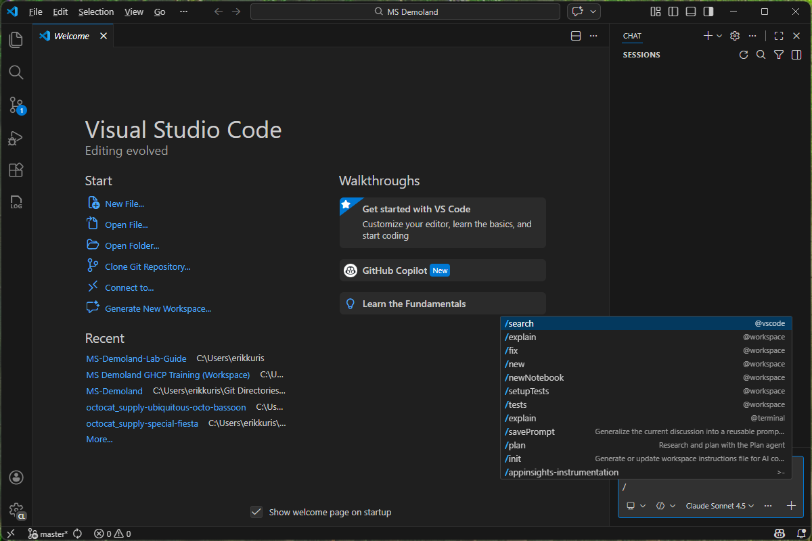

Copilot Primitives - Prompts, Instructions, Skills, Hooks, and Agents
Guide agent behavior with reusable context, then automate critical checks at lifecycle events
What We'll Cover
Today's Journey
- Four Building Blocks - How model guidance differs from deterministic automation
- Prompt Files - Reusable tasks you invoke in Local sessions
- Instruction Files - Repository and file-specific guidance
- Agent Skills - Portable workflows with instructions, scripts, and resources
- Agent Hooks - Commands that run at agent lifecycle events
- Composition - How the four options work together
- Decision Framework - When to choose each customization
The Building Blocks
Four Building Blocks
Prompts
.prompt.md files capture reusable tasks that you invoke in Local chat sessions.
Instructions
Markdown files provide repository-wide or conditional guidance to the agent.
Skills
SKILL.md folders package workflows, scripts, examples, and resources.
Hooks
.json configurations run commands at defined agent lifecycle events.
Where They Live in Your Repo
my-project/
├── .github/
│ ├── copilot-instructions.md ← repo-wide instructions
│ ├── prompts/ ← Local prompt files
│ │ ├── generate-api-test.prompt.md
│ │ └── explain-error.prompt.md
│ ├── instructions/
│ │ ├── typescript.instructions.md
│ │ └── testing.instructions.md
│ ├── skills/
│ │ └── azure-deploy/
│ │ └── SKILL.md
│ └── hooks/
│ ├── quality-checks.json
│ └── audit-tool-use.mjs
└── src/Prompt Files
What Is a Prompt File?
- A Markdown file with the
.prompt.mdextension - Captures a reusable task - like a saved chat message you can run again and again
- Can include variables, file references, and output format instructions
- In a Local session, type
/and select it from the prompt picker - Committed under
.github/prompts/→ shared with teammates using Local
graph LR
A[Invoke prompt] --> B[Resolve variables]
B --> C[Attach context]
C --> D[Run selected agent]
Anatomy of a Prompt File
---
agent: agent
description: Generate a unit test for the selected function
---
Write a comprehensive unit test for the function in the
current selection.
**Requirements:**
- Use the project's existing test framework
- Cover happy path, edge cases, and error conditions
- Follow the repository's test naming conventions
**Context:**
- Selected code: ${selection}Running & Sharing Prompts
- Select Local as the Session Target, then type
/ - Select your prompt file; VS Code resolves its variables and runs it
- Use Chat: Run Prompt or the editor play button as alternatives
- Prompts in
.github/prompts/are shared with teammates using Local - Build a prompt library - curated, tested prompts for common tasks

TODO: Recapture a current Local session showing a course prompt. The older screenshot above is illustrative only.
Instruction Files
What Are Instruction Files?
- Markdown guidance that VS Code can include automatically with chat requests
- Two flavors:
.github/copilot-instructions.md- repository-wide guidance for chat.instructions.mdfiles - conditional guidance selected by pattern or task relevance
- Useful for coding standards, architecture decisions, and project conventions
- They guide generated responses; they do not control inline suggestions or guarantee compliance
Repo-Wide: copilot-instructions.md
# Copilot Instructions
## Language & Framework
- Always use TypeScript with strict mode enabled
- Prefer async/await over raw Promises or callbacks
- Use functional components with hooks (no class components)
## Testing
- Write tests using Vitest, not Jest
- Every public function must have at least one test
## Style
- Use single quotes for strings
- Maximum line length: 100 characters
- Prefer named exports over default exportsScoped: .instructions.md Files
---
applyTo: "**/*.test.ts"
---
# Testing Instructions
- Use `describe` / `it` blocks (not `test`)
- Mock external services with `vi.mock()`
- Assert with `expect().toBe()` - never use `assert`
- Name test cases: "should <expected behavior> when <condition>"- The optional
applyToglob associates guidance with matching files - A
descriptioncan help the agent select instructions for a relevant task - Perfect for language-specific, framework-specific, or folder-specific rules
Skills
What Is a Skill?
- A folder containing a required
SKILL.mdand optional supporting resources - Packages instructions, scripts, examples, templates, and reference material
- Can load progressively when relevant or explicitly invoked
- Can be invoked manually from chat with
/skill-name - Portable across supporting tools, including VS Code and Copilot CLI
Anatomy of a SKILL.md
---
name: azure-deploy
description: >
Use this skill when deploying services to Azure
Container Apps. Covers Bicep templates, azd
configuration, and managed identity setup.
---
# Azure Deployment Skill
## Prerequisites
- Azure CLI installed and authenticated
- Supported Azure Developer CLI (azd) installed and authenticated
## Deployment Steps
1. Run `azd init` to scaffold the project
2. Configure `azure.yaml` with service definitions
3. Run `azd up` to provision and deploy
## Bicep Patterns
- Always use managed identity (no connection strings)
- Tag all resources with `environment` and `team`
- Use Key Vault references for secrets
## Resources
- Read `references/container-apps.md` for platform constraints
- Run `scripts/validate-bicep.ps1` before deploymentIllustrative skill structure, not a complete deployment recipe. No Azure deployment is needed for this course.
How Skills Load
Discover
VS Code exposes each skill's name and description so the agent can find relevant capabilities.
Load
The agent reads SKILL.md when it selects the skill or the user invokes it with /.
Execute
The agent follows the workflow and reads or runs supporting resources only as needed.
Agent Hooks
What Is an Agent Hook?
- A command that runs at a defined point in an agent session lifecycle
- Shared repository hooks live in
.github/hooks/*.jsonat the repository root - Receives structured event data as JSON through standard input
- Can return a JSON object on standard output; its effect depends on the event
- Runs executable code in the hook runtime, so review commands and limit access
Hook Lifecycle Events
| Event | When it runs | Typical use |
|---|---|---|
sessionStart | A session starts or resumes | Add project context |
userPromptSubmitted | A prompt is submitted | Observe the request |
preToolUse | Before a tool call | Inspect or decide on an action |
postToolUse | After a tool call | Validate a result or add context |
preCompact | Before context compaction | Save information |
subagentStart | A subagent starts | Observe delegated work |
subagentStop | A subagent finishes | Capture completion data |
agentStop | The agent is about to finish its turn | Check whether it should finish |
sessionEnd | The session terminates | Clean up or record an event |
Anatomy of a Workspace Hook
{
"version": 1,
"hooks": {
"postToolUse": [
{
"type": "command",
"command": "node .github/hooks/audit-tool-use.mjs",
"cwd": ".",
"timeoutSec": 10
}
]
}
}- Each event can run one or more command hooks
- Commands can define a working directory, environment values, and
timeoutSec - Use the documented cross-platform command or platform-specific shell fields
- This example requires Node.js and the referenced script on the execution host
Hook Execution Flow
graph LR
A[Configured event] --> B[JSON on stdin]
B --> C[Hook command]
C --> D[Optional JSON on stdout]
D --> E[Event-specific behavior]
C --> F[Failure or timeout]
F --> G[Handling varies by event]
Hooks Are Executable Automation
Do
- Review hook code before trusting a repository
- Validate every field received from standard input
- Use least privilege and short timeouts
- Log only sanitized metadata
Avoid
- Passing untrusted input directly to a shell
- Printing prompts, source code, secrets, or tokens
- Running broad commands after every tool call
- Assuming a hook is sandboxed
When to Use What
Repeat a request?
Prompt file in Local
In Copilot, use a manually invoked skill.
Guide behavior?
Instruction file
Provide standards and contextual rules.
Package a workflow?
Agent Skill
Bundle steps, scripts, and resources.
Automate at an event?
Agent hook
Invoke code at a lifecycle event.
How They Work Together
graph LR
A[Invoke skill in Copilot] --> B[Instructions guide output]
B --> C[Skill supplies workflow]
C --> D[Agent workflow]
D --> E[Configured hook event]
E --> F[Hook command invoked]
F --> G[Event-specific handling]
Copilot composition: invoke a skill, apply instructions, run configured hooks. Prompt files remain a Local option.
These Four Are Not the Whole Platform
| Need | Customization | What it adds |
|---|---|---|
| Specialized role | Custom agent | Persona, tools, model, handoffs, and subagents |
| External system | MCP server | Tools and data from APIs, databases, or services |
| Packaged distribution | Agent plugin | Installable bundle of customizations |
Wrap-Up & Next Steps
Key Takeaways
- Prompt files (
.prompt.md) capture reusable tasks invoked in Local - Instruction files provide repository-wide or conditional guidance for chat
- Agent Skills (
SKILL.md) package workflows and can be manually invoked in Copilot - Agent hooks (
.json) run commands at defined lifecycle events - Prompts, instructions, and skills guide the model; hooks provide deterministic automation
- All four can be versioned with the repository and reviewed by the team
Where to Go Next
- Agent Potato: License to Chat - Build a full-stack app using Copilot agents end-to-end
- Enterprise Grade Marmalade - Central prompt repos, organization-level instructions, and governance
- VS Code Agent Customization Docs -
code.visualstudio.com/docs/agent-customization/overview - VS Code Agent Hooks Docs -
code.visualstudio.com/docs/agent-customization/hooks - GitHub Copilot Docs -
docs.github.com/en/copilot